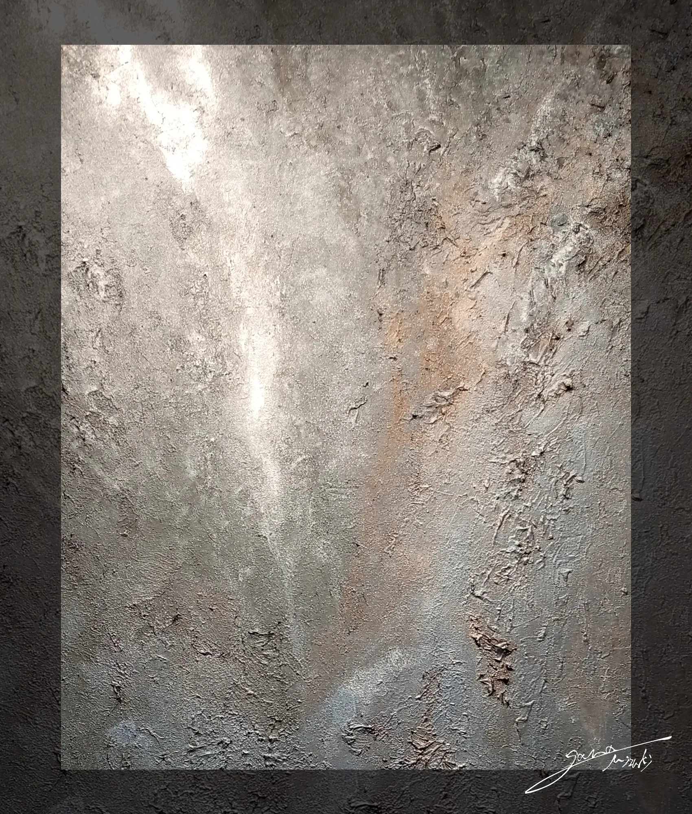

01 Biography
小山瑞樹｜Mizuki Oyama
小山瑞樹（Mizuki Oyama）は、1998年、宮城県仙台市生まれの抽象アーティスト。
Mizuki Oyama is an abstract artist born in Sendai, Miyagi Prefecture, Japan, in 1998.
幼い頃から絵に親しみ、2011年の東日本大震災を経験したことをきっかけに、目に見える形だけでなく、その場の空気や感情、言葉にならない感覚を色で表現することに関心を深めた。
He has drawn since childhood. After experiencing the Great East Japan Earthquake in 2011, he grew more interested in using color to express visible forms as well as the atmosphere of a place, emotions, and sensations beyond words.
高校時代には抽象画の制作に取り組み、作品「無題」で第67回宮城県高等学校美術展の優秀賞を受賞。その後、制作から離れた時期を経て活動を再開し、2021年から国内外で本格的に作品を発表し始めた。
In high school, he took up abstract painting and received an Excellence Award at the 67th Miyagi Prefectural High School Art Exhibition for “Untitled.” After a period away from making art, he resumed his practice and began exhibiting actively in Japan and abroad in 2021.
現在はNatureInspireとして、自分自身の感覚や内面の変化と向き合いながら、抽象作品やオーダー作品を制作している。
Today, working as NatureInspire, he creates abstract and commissioned works while attending to his own sensations and inner changes.
作品制作に加えてWeb制作にも取り組み、2026年には企画グループ展「ゆらゆら」を立ち上げた。作家と鑑賞者が出会い、それぞれの活動や創造の可能性を広げられる場づくりにも力を注いでいる。
Alongside his art practice, he works in web development. In 2026, he launched the group exhibition “Yurayura.” He also works to create spaces where artists and viewers can meet and find new possibilities for their own activities and creative work.
幼い頃から変わらない創造への思いを原点に、自身の表現を深めながら、人々がArtに触れられる機会を育てている。
Guided by the desire to create that has stayed with him since childhood, he continues to deepen his own practice and create opportunities for people to encounter art.
02 Career / Timeline
| Year | 主な転機 / Milestones |
|---|---|
| 1998 | 宮城県仙台市に生まれる。 Born in Sendai, Miyagi Prefecture, Japan. |
| 2011 | 東日本大震災を経験。雰囲気や感情を色として表すことを意識するようになる。 Experiences the Great East Japan Earthquake and begins to focus on expressing atmosphere and emotions through color. |
| 2016 | 「無題」で第67回宮城県高等学校美術展 優秀賞を受賞。 Receives an Excellence Award at the 67th Miyagi Prefectural High School Art Exhibition for “Untitled.” |
| 2021 | 出展活動を本格的に開始。ポートフォリオWebサイトの制作を始める。 Begins exhibiting actively and building his portfolio website. |
| 2026 | プログラミングスクールを受講。2月に「ゆらゆら」の企画を始め、10月に初開催。 Enrols in a programming school, begins planning “Yurayura” in February, and holds its first edition in October. |
03 Exhibitions / Awards / Certifications
| Year | 出展歴｜Exhibition history |
|---|---|
| 2025 | 03｜日台の絆展 会場 / 台湾 March｜Japan-Taiwan Bond Exhibition Venue / Taiwan |
| 2023 | 06｜第2回日仏友好オリジナル切手展 会場 / フランス June | 2nd Japan-France Friendship Original Stamp Exhibition Venue / France |
| 2022 | 11｜芸術の虎展 会場 / 日光東照宮美術館
04｜日アセアン友好文化交流展 会場 / 東京アセアンセンター November | Tigers of Art Exhibition Venue: Nikko Toshogu Museum April | Japan-ASEAN Friendship and Cultural Exchange Exhibition Venue: Tokyo ASEAN Centre |
| 2021 | 11｜サロン・ド・アール・ジャポネ 会場 / フランス
08｜OASISU2021 会場 / 大阪あべのハルカス 04｜チャリティアート展 会場 / 東京 November | Salon d'Art Japonais, Venue: France August | OASISU 2021, Venue: Abeno Harukas, Osaka April | Charity Art Exhibition, Venue: Tokyo |
| Year | 認定 賞｜Certification Award |
|---|---|
| 2025 | 日仏友好貢献親善大賞 Japan-France Friendship Contribution Goodwill Award |
| 2022 |
徳川家康作家之賞 日本・モンゴル外交関係樹立50周年記念事業認定 Tokugawa Ieyasu Writers' Award Certified as a project commemorating the 50th anniversary of the establishment of diplomatic relations between Japan and Mongolia |
| 2021 |
TAJO (トスカーナ芸術鑑定機構) ピエールジャコモ・ペトリオーリ博士による、「Artista del post luminescenza e sole bianco.【残照と白日の芸術家】」認定 TAJO (Tuscan Art Appraisal Institute) Certified by Dr. Piergiacomo Petrioli as "Artist of the Afterglow and the Daylight." |
| 2016 | 第67回宮城県高等学校美術展 優秀賞 67th Miyagi Prefectural High School Art Exhibition, Excellence Award |
04 Full Biography / Story
小山瑞樹。1998年、宮城県仙台市生まれ。
Mizuki Oyama was born in Sendai, Miyagi Prefecture, Japan, in 1998.
6歳になる前から絵を描くことが好きで、幼い頃には「画家になって旅をすること」を夢見ていた。
He loved drawing before he turned six and dreamed as a child of becoming a painter and traveling.
学校では授業中にも絵を描き続け、先生に注意されてもなかなか手を止められなかった。描くことは、何かを達成するためというより、日常の中で自然に生まれる行為だった。
At school, he drew during class and found it hard to stop even when teachers told him to. Drawing was something he did naturally in daily life, without a particular goal in mind.
2011年、東日本大震災を経験したことをきっかけに、ものの見方が変わった。
His perspective changed after he experienced the Great East Japan Earthquake in 2011.
目に映るものをそのまま描くだけではなく、その場の雰囲気や感情、言葉にならない感覚を、色を通して表現することに関心を持つようになった。
He became interested in using color to convey more than what he saw: the atmosphere of a place, emotions, and sensations he could not put into words.
中学生になると、不定期でアート教室に通い、写真やコラージュ、オイルパステル、セメントなど、絵画に限らないさまざまな素材や表現に触れた。こうした経験を通して、表現には決まった形がないことを知っていった。
In junior high school, he took occasional art classes and explored materials and methods beyond painting, including photography, collage, oil pastels, and cement. These experiences taught him that expression need not take any fixed form.
高校では美術部に所属し、本格的に抽象画と向き合い始めた。
In high school, he joined the art club and began to engage seriously with abstract painting.
構成や意味をあらかじめ決めず、感覚のままに絵の具を重ねて制作した「無題」で、第67回宮城県高等学校美術展の優秀賞を受賞した。
His work “Untitled,” made by layering paint intuitively without deciding on a composition or meaning in advance, received an Excellence Award at the 67th Miyagi Prefectural High School Art Exhibition.
受賞はうれしかった一方で、「なぜこの作品が評価されたのか」「芸術は何を基準に評価されるのか」という疑問も生まれた。
He was pleased to receive the award, but it also raised questions: “Why was this work recognized?” and “What standards are used to evaluate art?”
この経験から、作品の価値は誰が決めるのか、見る人は作品から何を受け取るのか、そしてArtにはどのような可能性があるのかを考えるようになった。
That experience led him to consider who determines the value of a work, what viewers take from it, and what possibilities art can open up.
高校卒業後は、デジタルでの表現を学ぼうと、デザインやイラストを学べる専門学校に進学した。
After high school, he enrolled in a vocational school offering design and illustration to learn how to express himself through digital media.
当初はパソコンの操作やコーディングに苦戦したが、授業後も学校に残り、課題制作や学習を続けた。
At first, he struggled with using computers and writing code, but he stayed after class to work on assignments and keep learning.
その一方で、目的や伝えたい内容を明確にして制作するデザインと、自分自身の感覚から自然に生まれる表現との違いを意識するようになった。
He also began to notice a difference between design, which starts from a clear purpose and message, and expression that arises naturally from his own sensations.
商品やサービスへの欲求を生み出すために表現が使われることへの違和感や、将来の進路への迷いも重なり、次第に自分が何のために創造したいのかを見失っていった。
He felt uneasy about using creative work to make people want products or services. As that unease and uncertainty about his future grew, he gradually lost sight of why he wanted to create.
その後の約3年間は作品制作から離れ、さまざまな仕事や人間関係、環境を経験しながら、自分自身の生き方を模索した。
For about three years afterward, he stepped away from making art. Through different jobs, relationships, and environments, he explored how he wanted to live.
そうした時間を経て、幼い頃から抱いていた創造への思いと再び向き合い、作品制作を再開した。
After that time away, he returned to the desire to create that he had felt since childhood and began making art again.
2021年から本格的に出展活動を始め、東京、大阪、日光をはじめ、フランスや台湾など、国内外で作品を発表してきた。
He began exhibiting actively in 2021 and has shown his work in Japan and abroad, including in Tokyo, Osaka, Nikko, France, and Taiwan.
同じ年には、自分の作品を自分の手で届ける場所をつくろうと、ポートフォリオWebサイトの制作も始めた。
That same year, he began building a portfolio website as a place to share his work directly.
かつて苦手としていたコーディングを独学で学び直し、後に生成AIも取り入れながら、Web制作の技術を身につけていった。
He taught himself coding again after having struggled with it, and later incorporated generative AI as he developed his web development skills.
作品をつくることと、作品を届ける場所をつくること。その両方が、現在の活動につながっている。
Making art and creating a place to share it have both shaped what he does today.
また、制作を続ける中で、創造することは自分自身を知ることでもあると感じるようになった。
As he continued making art, he came to see creating as a way of getting to know himself.
その経験を表す作品のひとつが「裏裏」である。
One work that reflects that experience is “裏裏.”
それまで作品の中心に置くことのなかった黒という色と向き合いながら制作したこの作品は、自分自身の内面を見つめ、受け入れていく過程とも重なっている。
In making this work, he engaged with black, a color he had not previously placed at the center of his work. That experience went hand in hand with looking inward and learning to accept aspects of himself.
何かを形にするだけでなく、制作を通して、それまで気づかなかった感情や感覚に触れることがある。創造は、自分自身の変化を知る機会にもなっている。
Making art gives form to something and can also bring feelings and sensations he had not noticed before into view. Creating gives him a chance to recognize how he himself is changing.

黒という色と向き合った作品。
A work that explores the color black.
2026年には、Web制作の技術を改めて学び直すため、プログラミングスクールを受講した。
In 2026, he attended a programming school to revisit his web development skills.
同年2月には企画グループ展「ゆらゆら」の企画を始め、10月に初開催した。
In February of that year, he began planning the group exhibition “Yurayura,” which he held for the first time in October.
これまでの出展活動では、企業が主催する展示に招待や推薦を受けて参加したこともあったが、出展費用は自己負担だった。
In his earlier exhibition activity, he sometimes took part in shows organized by companies after being invited or recommended, but he still had to cover the exhibition fees himself.
作品1点につき10万円から25万円ほどの費用が必要な展示もあり、その費用に見合う活動機会や支援が十分に得られたとは感じられなかった。
Some exhibitions charged around ¥100,000 to ¥250,000 per work. He felt that the opportunities and support he received did not justify the cost.
こうした経験から、挑戦しようとする作家に大きな負担がかかる仕組みに疑問を抱くようになった。
These experiences led him to question a system that places a heavy burden on artists who want to try something new.
そこから、作家が無理なく作品を発表でき、その経験が次の活動へとつながっていく場所をつくりたいと考えるようになった。
He wanted to create a place where artists could show their work without undue strain and build on the experience in their future activities.
「ゆらゆら」では、作品を展示するだけでなく、作家同士や鑑賞者との出会い、交流を大切にしている。作品を通じた出会いが、それぞれの創造や活動を広げるきっかけになる場を目指している。
“Yurayura” values the connections and exchanges that happen among artists and between artists and viewers. It aims to give people a place to meet through art and discover ways to expand their own creative work and activities.
今後は各地での継続開催を通して活動を育て、将来的には出展費の無償化も実現したいと考えている。
He hopes to grow the project through recurring exhibitions in different places and eventually waive exhibition fees for artists.
現在はNatureInspireとして、抽象作品やオーダー作品の制作、展示活動、Web制作、そして「ゆらゆら」の企画・運営を行っている。
Today, as NatureInspire, he creates abstract and commissioned works, exhibits his art, works in web development, and plans and runs “Yurayura.”
幼い頃から変わらない創造への思いを原点に、自分自身と向き合いながら表現を深めるとともに、人々がArtに触れ、それぞれの感性で作品と出会える場を育てている。
Guided by the desire to create that has stayed with him since childhood, he deepens his practice through looking inward and develops places where people can encounter art on their own terms.